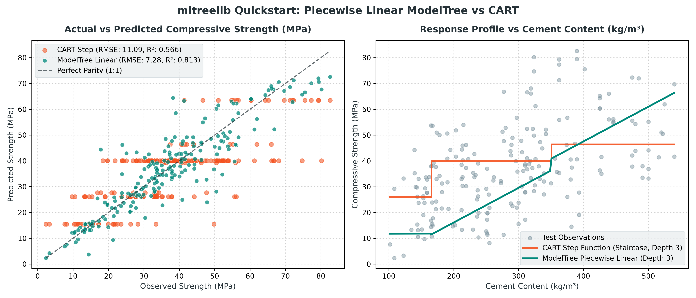
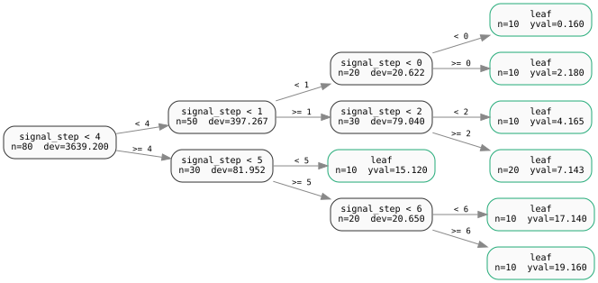

Quickstart¶
Fit a high-performance model tree on real tabular data in seconds, inspect its transparent decision paths, and evaluate how piecewise linear leaves eliminate step-function distortion.
The complete executable script lives at examples/quickstart.py:
1. Why Model Trees Outperform Standard CART¶
Standard decision trees (CART) predict a constant mean in each leaf node. On continuous tabular surfaces, this creates rigid staircase artifacts that require excessive depth and overfitting to approximate simple linear trends.
ModelTree(leaf="linear") decouples the tree partition search from leaf estimation. The tree discovers optimal split thresholds while terminal leaves fit regularized linear ridge regressions, capturing local slopes smoothly at shallow depth.
flowchart LR
A["Raw Feature Vector\n[Cement, Water, Age, ...]"] --> B{"Age <= 14 days?"}
B -- "Yes (Early Hydration)" --> C{"Cement <= 350 kg/m³?"}
B -- "No (Matured Matrix)" --> D{"Cement <= 350 kg/m³?"}
C --> E["Leaf 8: Local Ridge Linear\ny = 0.05*Cement - 0.12*Water + ..."]
D --> F["Leaf 13: Local Ridge Linear\ny = 0.11*Cement - 0.04*Water + ..."]
E --> G["Continuous Prediction (MPa)"]
F --> G
classDef inputBox fill:#1e293b,stroke:#475569,stroke-width:2px,color:#ffffff;
classDef splitBox fill:#b45309,stroke:#d97706,stroke-width:2px,color:#ffffff;
classDef leafBox fill:#065f46,stroke:#059669,stroke-width:2px,color:#ffffff;
classDef outBox fill:#1e3a5f,stroke:#2563eb,stroke-width:2px,color:#ffffff;
class A inputBox;
class B,C,D splitBox;
class E,F leafBox;
class G outBox;2. Fit and Evaluate on Real Benchmark Data¶
We evaluate on the industrial benchmark Concrete Compressive Strength (Yeh 19981; 1,030 mixtures, 8 continuous ingredients).
Why Decouple Tree Search from Leaf Estimation?
Evaluating multivariate linear models at every candidate split threshold incurs massive combinatorial overhead. ModelTree uses fast variance or structural break heuristics to discover partition boundaries, then solves the closed-form regularized ridge system once per terminal leaf node.
Dataset Provenance: Concrete Compressive Strength
Collected by Prof. I-Cheng Yeh (1998) at Chung-Hua University1. Features 1,030 lab mixtures quantifying how 7 cementitious ingredient ratios (cement, slag, fly ash, water, superplasticizer, coarse aggregate, fine aggregate) and curing age interact nonlinearly to determine compressive yield stress (MPa).
This example loads the concrete strength dataset into a Dataset, splits it into an 80% training set and a 20% holdout set in row order, fits a ModelTree with linear ridge leaves at depth 4, and prints MetricsReport. Compare the linear-leaf tab with the constant-mean baseline tab.
from mltreelib import MetricsReport, ModelTree
from mltreelib.data import Dataset
# 1. Load benchmark dataset (1,030 mixtures, 8 features)
ds = Dataset.load(
"concrete_compressive_strength", target="ConcreteCompressiveStrength"
)
# 80/20 split with no shuffling: first 80% of rows train, last 20% test
train, test = ds.split(test_size=0.2, time=True)
# Fit mltreelib ModelTree (piecewise linear ridge leaves, depth=4)
model_tree = ModelTree(leaf="linear", max_depth=4, min_rows=20, l2=1e-3)
model_tree.fit(train)
pred_mt = model_tree.predict(test)
# Measure holdout metrics
rep = MetricsReport("regression", y_true=test.y, y_pred=pred_mt)
print(f"ModelTree (Linear): RMSE = {rep['rmse']:.2f} MPa, R2 = {rep['r2']:.3f}, MAE = {rep['mae']:.2f} MPa")
from mltreelib import MetricsReport, ModelTree
from mltreelib.data import Dataset
ds = Dataset.load(
"concrete_compressive_strength", target="ConcreteCompressiveStrength"
)
train, test = ds.split(test_size=0.2, time=True)
# Fit piecewise-constant CART decision tree (leaf="mean", depth=4)
cart = ModelTree(leaf="mean", max_depth=4, min_rows=20)
cart.fit(train)
pred_cart = cart.predict(test)
rep = MetricsReport("regression", y_true=test.y, y_pred=pred_cart)
print(f"ModelTree (Mean) : RMSE = {rep['rmse']:.2f} MPa, R2 = {rep['r2']:.3f}, MAE = {rep['mae']:.2f} MPa")
What to read in the output: on the same 824-row train and 206-row test split at depth 4, linear ridge leaves reduce test RMSE and MAE substantially compared with constant-mean leaves.
3. Empirical Results & Performance Comparison¶
The two tabs above print the holdout metrics for the same 824-row train and 206-row test split. The tree has 16 leaves at depth 4, which gives local linear leaves enough room to model the nonlinear cement interactions while keeping the tree compact.
| Model | Leaf Formulation | Depth | Test RMSE (MPa) | Test \(R^2\) | Test MAE (MPa) |
|---|---|---|---|---|---|
ModelTree(leaf="mean") |
Constant Mean | 4 | 10.16 | 0.635 | 7.50 |
mltreelib ModelTree (Linear) |
Regularized Linear Ridge | 4 | 6.70 | 0.841 | 4.83 |
With identical tree topology (depth 4, 16 leaves), ModelTree with linear leaves achieves a 34.1% RMSE reduction over constant-leaf CART baselines, raising explained variance from 63.5% to 84.1%.

- Left Panel (Parity Plot): Predictions from
ModelTree(leaf="linear")cluster tightly along the 1:1 diagonal, whereas constant-mean trees are constrained to horizontal bands corresponding to leaf averages. - Right Panel (Response Profile): Along the gradient of Cement content, constant-mean CART trees produce wide step discontinuities, while
ModelTreepreserves the physical continuous response curve.
4. Transparent Tree Structure & Inspection¶
ModelTree prints in rpart-compatible notation with exact node numbering, split criteria, sample support, deviance, and fitted constants. The fitted linear-leaf tree from section 2 prints as:
n= 824
node), split, n, deviance, yval
* denotes terminal node
1) root 824 228333.9167 35.46173
2) Age <= 14 263 38269.2920 22.98684
4) Cement <= 350 190 14043.4743 18.46968
8) Age <= 7 143 6493.4788 15.44493
16) Cement <= 255 90 2307.7737 12.94604 *
17) Cement > 255 53 2669.3540 19.68835 *
9) Age > 7 47 2261.0419 27.67263
18) Superplasticizer <= 7.77 22 317.8392 22.95673 *
19) Superplasticizer > 7.77 25 1023.3672 31.82263 *
5) Cement > 350 73 10258.3911 34.74381
10) Water <= 178 48 5059.1796 39.25437
20) Age <= 3 23 701.6009 31.67076 *
21) Age > 3 25 1817.8845 46.23130 *
11) Water > 178 25 2347.6360 26.08354 *
3) Age > 14 561 129948.0812 41.31003
6) Cement <= 350 430 68793.4962 36.74539
12) Cement <= 164.6 101 8521.7805 26.09900
24) BlastFurnaceSlag <= 115 26 301.5159 14.75293 *
25) BlastFurnaceSlag > 115 75 3712.8816 30.03231 *
13) Cement > 164.6 329 45309.4025 40.01374
26) Water <= 175.5 112 15888.7132 47.44224 *
27) Water > 175.5 217 20050.3174 36.17967 *
7) Cement > 350 131 22786.2018 56.29321
14) Water <= 181.1 76 6496.7515 63.46522
28) Superplasticizer <= 11.6 40 2939.7627 67.95466 *
29) Superplasticizer > 11.6 36 1855.0050 58.47695 *
15) Water > 181.1 55 6978.2990 46.38280
30) Cement <= 436 34 2937.2636 41.83485 *
31) Cement > 436 21 2199.1837 53.74616 *
Export directly to Graphviz DOT for vector diagrams:

Next Steps¶
- Explore the Practical Modeling Pathways for end-to-end classification, survival, and uplift workflows.
- Study Dynamic Leaf Retraining for fast warm-start leaf adaptation.
- Review Distributional Leaves for Tobit, Tweedie, and Gamma modeling.
- Inspect the API Reference for all parameters and methods.
References¶
-
Yeh, I-C. (1998). "Modeling of strength of high-performance concrete using artificial neural networks." Cement and Concrete Research, 28(12), 1797-1808. ↩↩
-
Quinlan, J. R. (1992). "Learning with continuous classes." 5th Australian Joint Conference on Artificial Intelligence, 343-348. ↩
-
Chow, G. C. (1960). "Tests of equality between sets of coefficients in two linear regressions." Econometrica, 28(3), 591-605. ↩